Плеєр 360°, 180° і 3D-відео, фото й прямих трансляцій для Meta Quest. Простий для глядача, керований для оператора стенду й інформативний для фахівця, який перевіряє матеріал. Усе налаштовується в самому шоломі — без хмарного сервісу, облікового запису й зовнішнього пульта.
360° і 180°, 3D верх-низ і ліво-право (VR180), плаский 2D-екран. Формат береться з назви файлу або вибирається одним натисканням і запам'ятовується для кожного відео. До 8K — у межах апаратного декодера Quest. Частота екрана сама підлаштовується під відео (24 к/с — 72 Гц, 30 — 90 Гц, 60 — 120 Гц), тож рух плавний, без посмикування.
Прямі трансляції
HLS, DASH, RTSP, RTMP і WebRTC (WHEP); WebRTC призначений для трансляцій із малою затримкою. Трансляцію додають через просту форму: вказують сервер, порт і назву потоку. Якщо зв'язок обірветься, плеєр чекатиме на відновлення й підключиться знову. Відео H.264 — через усі протоколи; H.265 (HEVC) — через RTSP, HLS і DASH.
Відео з комп'ютера через Wi-Fi
Відкрийте спільну папку на Windows чи Mac — і дивіться відео без кабелю або завантажте великий файл на шолом. Плеєр пам'ятає останню папку, а інструкція з налаштування доступна прямо на екрані.
Бібліотека
Плитки з мініатюрами, тривалістю, роздільністю й позначкою «переглянуто»; фільтри «Відео / Фото / Live». Відео з будь-якої папки шолома або з флешки. Субтитри .srt / .vtt поруч із файлом.
Інструменти фахівця
Поворот, нахил, горизонт і сітка горизонту; яскравість і контраст; «Про файл» (кодек, бітрейт, колір і HDR, просторові метадані); гістограма й зебра; статистика відтворення; порівняння двох версій; нотатки з таймкодом.
Expo для стендів і музеїв
Глядач не бачить меню: плитки, циклічне відтворення одного відео, плейлист або трансляція. Майстер налаштування складається з трьох кроків, а вихід захищено жестом і PIN-кодом для оператора. Коли наступний глядач надягає шолом, починається новий сеанс. Налаштуйте один шолом і скопіюйте папку на інші.
Контролер, руки або погляд
З контролером використовуйте промінь і тригер, руками — промінь і щипок пальцями, а можна просто дивитися на кнопку. Знак «?» біля складних налаштувань відкриває пояснення простими словами, а в Довідці є пошук. Інтерфейс доступний українською й англійською.
Приватність
Без облікового запису, реклами й хмарного сервісу. Інтернет потрібен лише для трансляцій. Технічний журнал зберігається на шоломі й нікуди не надсилається автоматично — ви самі вирішуєте, чи передавати звіт розробнику. Політика конфіденційності
Три режими
Один плеєр — три способи працювати з ним
Режим перемикається у верхній частині налаштувань і визначає, що бачить людина, які параметри їй доступні та як завершити перегляд.
ПРОСТИЙ
Простий
Для того, хто просто дивиться: вдома, у гостях, на презентації.
Бібліотека плиток і привітання з трьома кроками, поки вона порожня
Кнопка формату розгортає всі варіанти одним рядом
Налаштування — чотири зрозумілі групи без технічних слів
«Перед» відео — завжди там, де дивиться глядач
ПРОФЕСІЙНИЙ
Професійний
Для оператора, монтажера, автора 360-зйомки.
Панель «Інструменти» під час відтворення: формат, поворот, горизонт, світло, звук, перевірка, статистика, порівняння, «Про файл»
Інструменти можна розкласти навколо себе окремими панелями
Налаштування для кожного відео окремо
Огляд будь-якої папки, флешки й комп'ютера в мережі
EXPO
Expo
Для стенду, музею, виставки: глядач меню не бачить.
Плитки, одне відео, плейлист або трансляція
Майстер у 3 кроки з перевіркою жесту виходу
Вихід оператора: утримати «Меню» або подивитися в підлогу чи стелю, далі PIN
«Перевірка стенду» перед відкриттям
Сценарії
Де плеєр уже має сенс
Туристичний стенд на виставці
Десяток 360-відео міста, черга відвідувачів, один оператор на кілька шоломів.
Expo · плитки. Глядач сам вибирає відео, а після перегляду повертається до плиток. Коли шолом знімають, сеанс скидається для наступного відвідувача.
Музейна інсталяція
Один фільм без жодного інтерфейсу цілий день.
Expo · одне відео. Чистий кадр: ні панелей, ні прицілу. Безшовний повтор і скидання, коли шолом довго лежить без руху.
Пряма трансляція з події
Камера 360 на сцені, ноутбук із сервером трансляцій, глядачі в шоломах у залі.
RTMP · RTSP · HLS · WebRTC. У разі обриву з'являється повідомлення «Трансляція скоро почнеться», а плеєр автоматично підключається знову.
Перевірка матеріалу
Чи правильні метадані, чи рівний горизонт, чи є відео HDR і чи впорається Quest із його бітрейтом.
Професійний · «Про файл», «Світло», «Перевірка». Нотатки з таймкодом записуються поруч із відео.
Презентація клієнту
Агенція показує готовий проєкт у переговорній — прямо з ноутбука через Wi-Fi.
Комп'ютер у мережі або Expo · плейлист. Поворот і формат запам'ятовуються для кожного відео.
Домашній перегляд
Людина вперше надягнула Quest і хоче подивитися свої 360-відео з телефона чи камери.
Простий. Достатньо скопіювати файли в папку й почати перегляд. Керувати можна поглядом, без контролера.
Екрани
Як це виглядає в шоломі
Напівпрозорі скляні панелі поверх відео. Знімки створено тим самим кодом, що працює в шоломі.
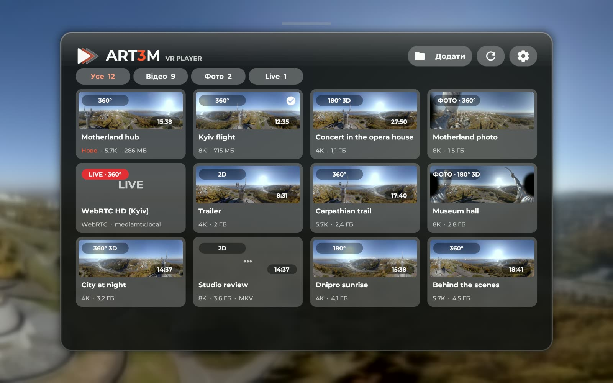
Бібліотека: формат, тривалість, роздільність, «Нове» й «переглянуто»
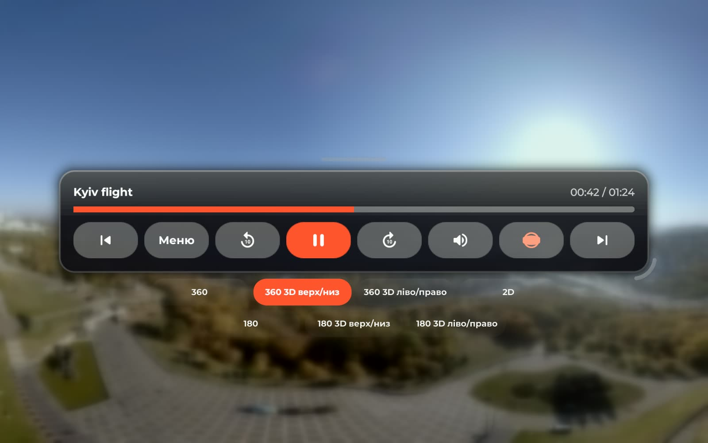
Панель відео: формат кадру — одним натисканням
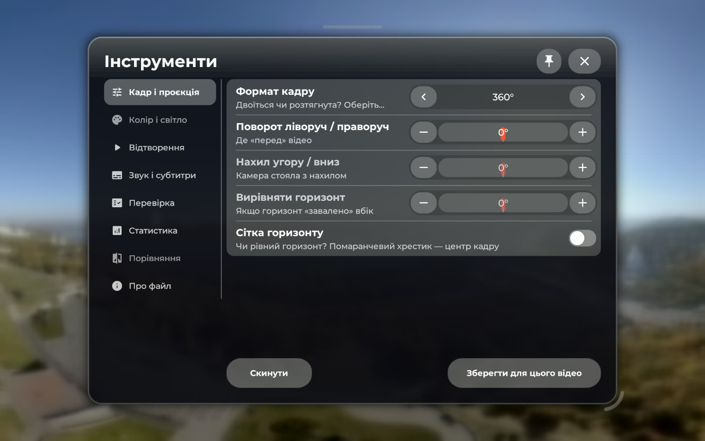
«Інструменти»: поворот, нахил, горизонт і сітка горизонту
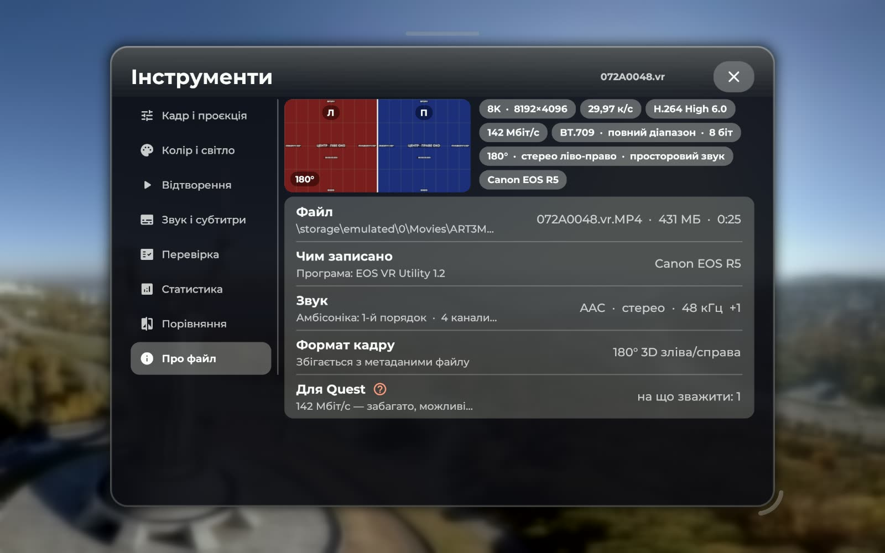
«Про файл»: камера, кодек, бітрейт, амбісоніка й оцінка сумісності з Quest
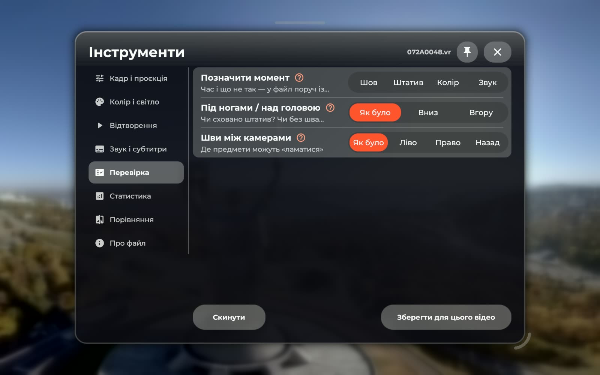
«Перевірка»: нотатки з таймкодом, перевірка нижньої точки та швів панорами
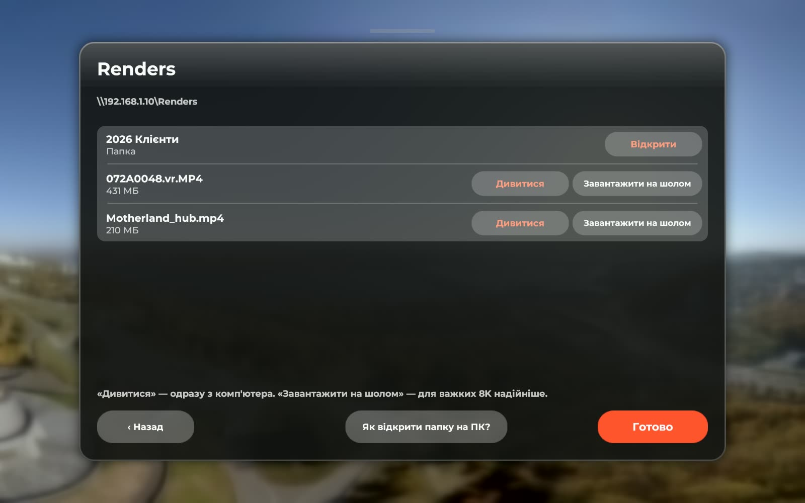
Комп'ютер у мережі: «Дивитися» або «Завантажити на шолом»
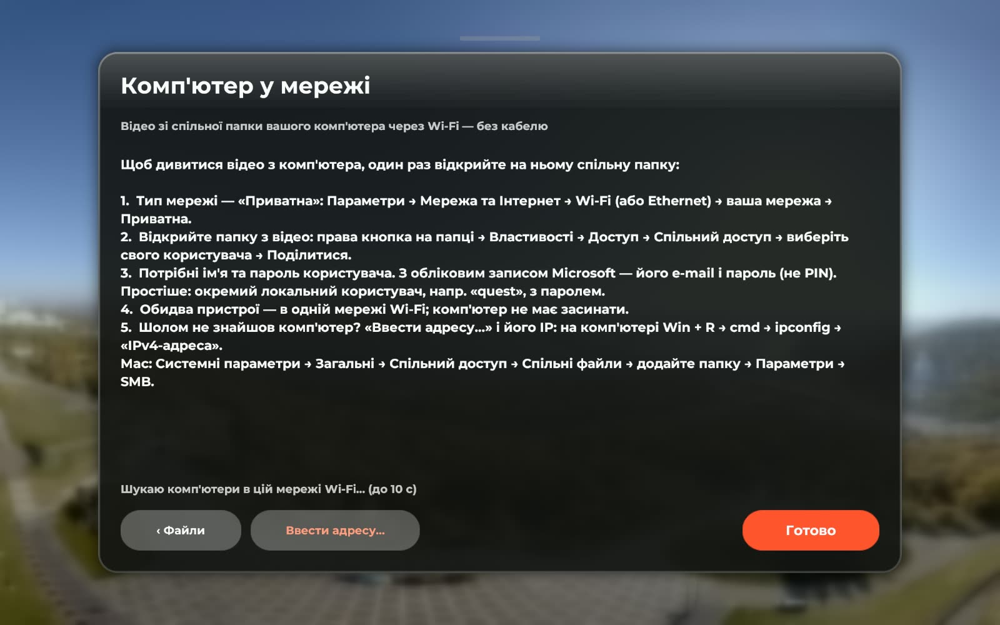
Як відкрити папку на ПК — прямо на екрані
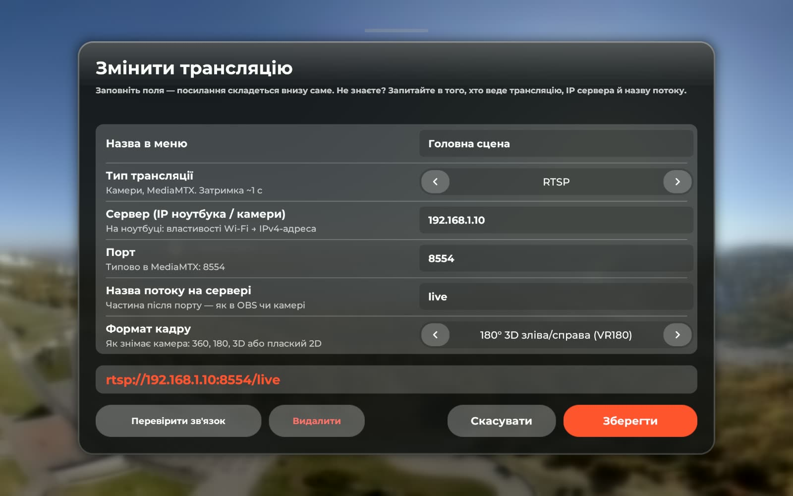
Трансляція — форма замість довгого посилання
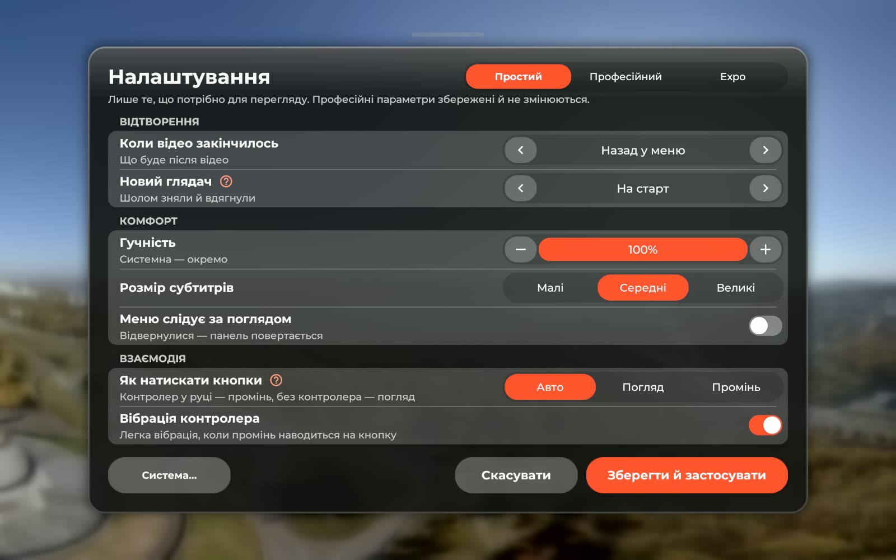
Простий режим: чотири групи налаштувань
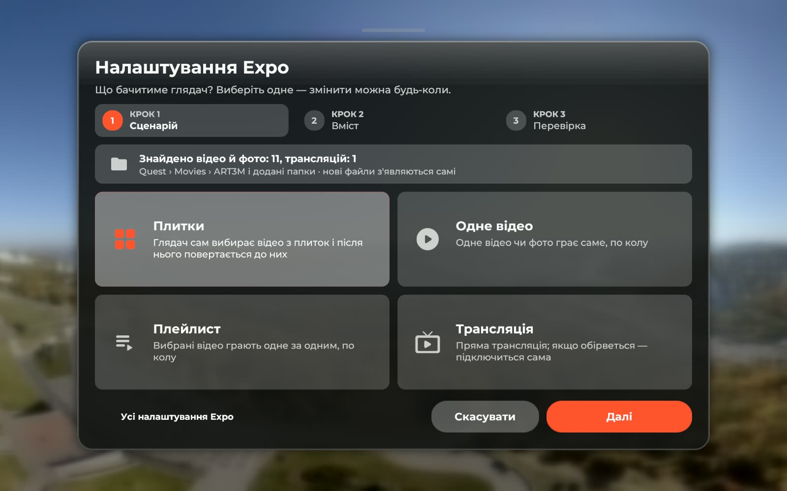
Майстер Expo: що побачить глядач
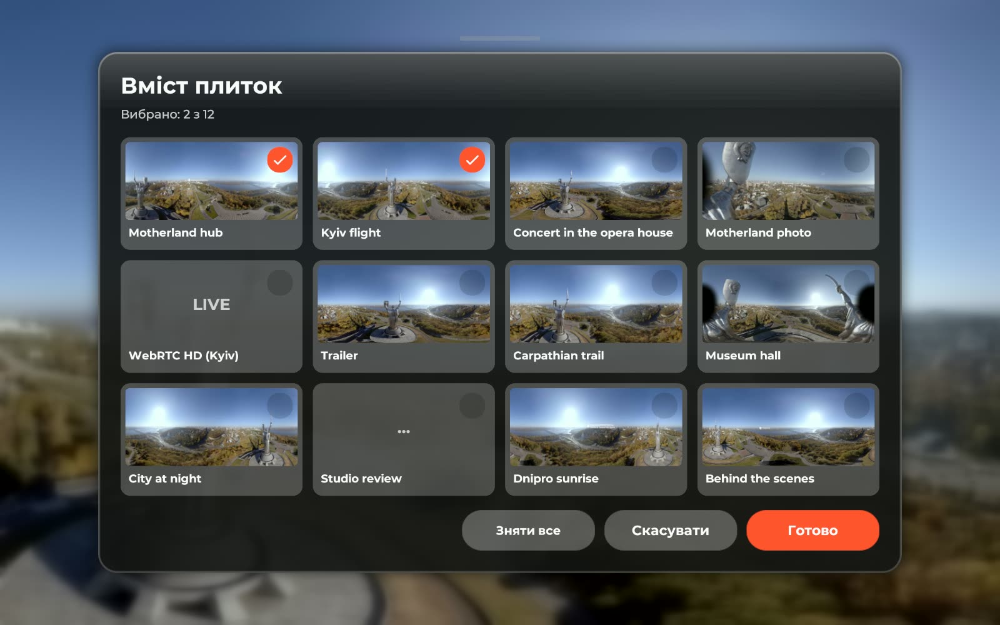
Вміст стенду — мініатюрами
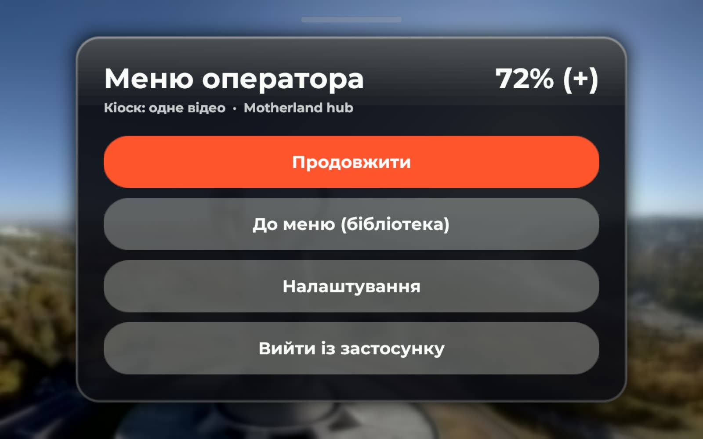
Меню оператора поверх показу
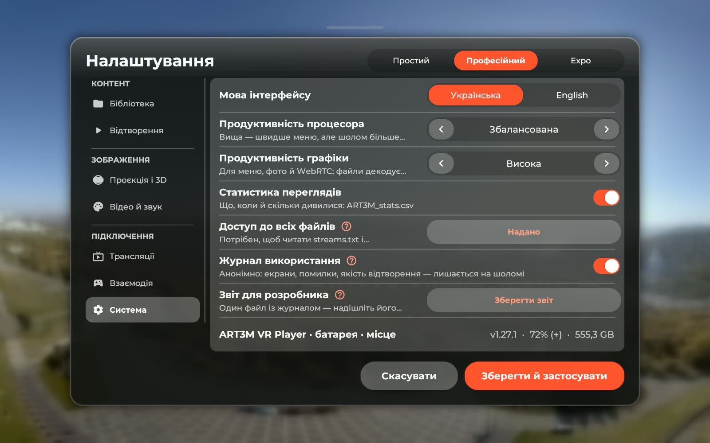
Система: «Звіт для розробника» одним натисканням
Тестувальникам
Допоможіть зробити плеєр кращим
ART3M VR Player зараз проходить альфа-тестування за запрошенням у Meta Horizon Store. Шукаємо людей із будь-якої країни, які знімають, монтують або показують 360-відео чи проводять події з трансляціями. Для участі потрібен шолом Meta Quest 2, Pro, 3 або 3S.
Як приєднатися
Відкрийте запрошення в альфа-канал: meta.com/s/8lkIFujXnУ браузері на телефоні чи комп'ютері. Увійдіть у той самий обліковий запис Meta, що й на шоломі, і прийміть запрошення.
Встановіть ART3M VR Player з Meta Horizon Store — у шоломі або в застосунку Meta Horizon на телефоні.Оновлення встановлюються автоматично, як і для інших застосунків.
Під час першого запуску дозвольте «Доступ до всіх файлів».Дозвіл потрібен, щоб застосунок міг читати відео, списки трансляцій і налаштування, які ви самі скопіювали до папки ART3M. Без нього відео відтворюються, але імпортовані списки й налаштування недоступні.
Напишіть на artemkysliakov@gmail.com, що приєдналися до тестування, і вкажіть модель шолома.Якщо хочете отримувати повідомлення про нові версії, зазначте це в листі. Якщо посилання не відкривається, також напишіть.
Підключіть шолом кабелем USB-C і в шоломі дозвольте доступ до даних.
Скопіюйте відео й фото в Quest › Movies › ART3M.
У бібліотеці натисніть стрілку оновлення.360° — за замовчуванням. Для інших форматів додайте в назву: _180, _TB (3D верх-низ), _LR (3D ліво-право), _2D. Або виберіть формат кнопкою під час перегляду.
Без кабелю: «Додати» → «Комп'ютер у мережі…» — відео зі спільної папки Windows або Mac через Wi-Fi.
Що перевірити (≈ 15 хвилин)
Сценарій
На що звернути увагу
1. Відео на шоломі
Плитки з мініатюрами; відео швидко запускається; напрямок погляду вперед відповідає передній частині панорами; панель відкривається тригером або поглядом униз.
2. Формати
Під час відтворення доступна кнопка вибору формату: 360 / 180 / 3D / 2D. Вибір запам'ятовується для цього відео.
3. Комп'ютер у мережі
«Додати» → «Комп'ютер у мережі…» → знайти чи ввести ПК → увійти → відкрити папку → «Дивитися» і «Завантажити на шолом».
4. Трансляція
Якщо маєте сервер (OBS, MediaMTX тощо): Налаштування → Трансляції → «Додати» → «Дивитися». Вимкніть і ввімкніть сервер — плеєр має дочекатися сам.
5. Режими
Шапка налаштувань: Простий / Професійний / Expo. У Expo пройдіть майстер, перевірте жест виходу й запустіть показ.
6. Зняти й надягнути
Зніміть шолом під час відтворення й надягніть знову.
Підключіть шолом кабелем, дозвольте доступ до даних і скопіюйте найновіший файл із папки Movies/ART3M/reports.На Mac — через Android File Transfer або OpenMTP.
Надішліть файл на artemkysliakov@gmail.com із темою «ART3M report».Додайте одне-два речення: що пішло не так і коли. Знімки екрана (кнопка Meta + курок) лежать у Quest › Oculus › Screenshots.
Що є у звіті
Версія плеєра, модель шолома, мова, режим роботи
Які екрани відкривали й скільки на них були, які кнопки натискали
Якість відтворення: тип джерела, старт, зупинки, пропущені кадри, роздільність, к/с, бітрейт
Wi-Fi: діапазон (2,4 / 5 ГГц), швидкість і сигнал
Плавність, заряд і температура, неочікувані закриття, помилки
Які дані не записуються у звіт
Назв файлів, адрес трансляцій і сайтів, IP-адрес
Імен комп'ютерів і користувачів, паролів, PIN, набраного тексту, назви Wi-Fi
Журнал нікуди не надсилається автоматично. Якщо ви надішлете файл електронною поштою, його отримає розробник і використає лише для діагностики та вдосконалення плеєра. Попросити видалити надісланий звіт можна за тією самою адресою. Журнал можна вимкнути в Налаштування → Система → «Журнал використання».
Корисно знати
Трансляції й відео з комп'ютера у 4K–8K потребують Wi-Fi 5 ГГц; на 2,4 ГГц важкі файли зупиняються — тоді «Завантажити на шолом».
HDR-відео показується як звичайне (виглядає блідіше) — плеєр попереджає про це в «Про файл».
Знайшли проблему, але звіт зберегти не вийшло? Просто напишіть, що сталося, — і цього достатньо.
Обмеження й плани
Чесно про те, чого ще немає
Відомі обмеження
HDR (PQ / HLG) показується як SDR, без тонмапінгу.
Амбісоніку розпізнано, але звук ще не повертається за головою.
Fisheye 180 / 190 / 200 без склейки не підтримується.
Звичайний застосунок не може заблокувати кнопку Meta; для повного кіоску потрібні Meta Horizon managed solutions або ArborXR.
Для відео 4K–8K через Wi-Fi 2,4 ГГц рекомендовано спочатку завантажити файл на шолом.
Наступне — за вашими відгуками
Підказка про слабкий Wi-Fi ще до старту трансляції.
Автоматичний перехід на нижчу якість трансляції, коли мережа не встигає.
Fisheye, passthrough-фон меню на Quest 3, зсув стерео.
Ваші пропозиції — пишіть, що найважливіше саме для вас.
Питання до тих, хто знімає 360
Що ви перевіряєте у файлі першим перед показом клієнту — і чого бракує у «Про файл»?
Застосовувати формат із метаданих автоматично чи лишати вибір людині?
З якими камерами й форматами ви працюєте на подіях (8K60, VR180, fisheye)?
Питання до тих, хто показує
Чи зрозумілий жест виходу оператора (погляд у підлогу / стелю) людям, що бачать Quest уперше?
Скільки шоломів у вас на стенді й як ви їх зараз налаштовуєте?
Що найчастіше дає збій під час трансляцій на подіях?